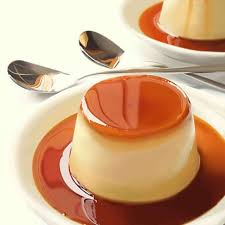
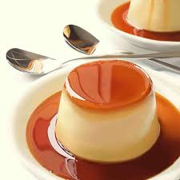
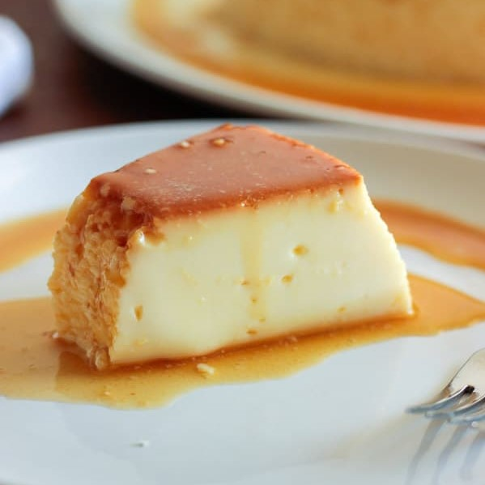
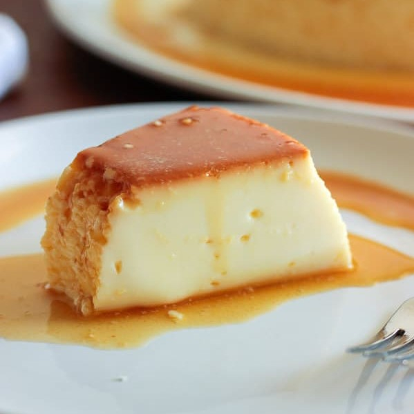

Ingredientes
- 1 xícara (chá) de açúcar
- 1/2 xícara (chá) de água quente
- 1 leite condensado 395 g
- 2 medidas (da lata) de leite Integral (790 ml)
- 3 ovos
Calda
Pudim
Modo de Preparo
- Na própria forma de pudim, derreta o açúcar até ficar dourado.
- Junte a água quente e mexa com uma colher.
- Deixe ferver até dissolver os torrões de açúcar e a calda engrossar.
- Em um liquidificador, bata todos os ingredientes do pudim e despeje na forma reservada.
- Cubra com papel-alumínio e leve ao forno médio (180°C), em banho-maria, por cerca de 1 hora e 30 minutos.
- Depois de frio, leve para gelar por cerca de 6 horas.
- Desenforme e sirva a seguir.
Calda
Pudim
PUDIM
Os portugueses afirmam ser os criadores do pudim, no século XVI, porém há controvérsias, pois historiadores afirmam que não tem como saber exatamente onde e nem quando esse doce foi inventado. Outra história conta que o pudim foi inventado por um abade português (cargo religioso acima do monge).
 

Você sabia que: O Dia Nacional do Pudim é comemorado em 22 de Maio. Porém, não há registros de quando, nem do porquê de a data ter sido criada.
 
